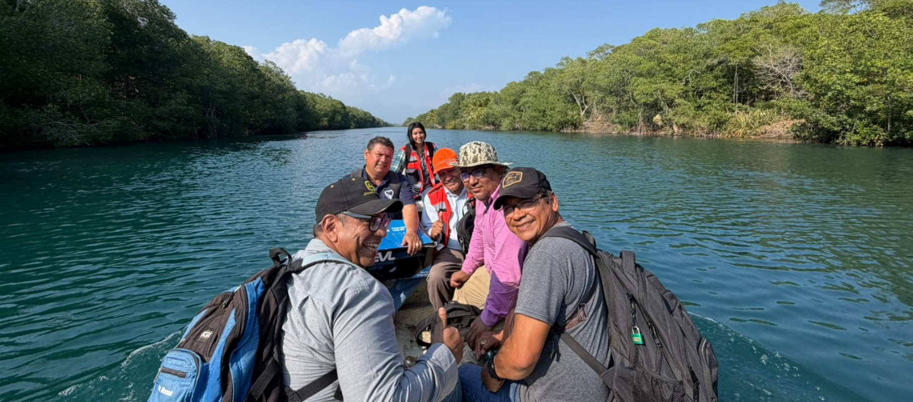
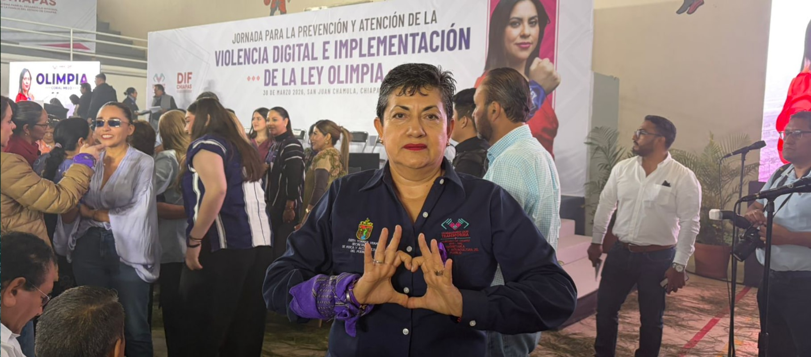

INFORMACION DESTACADA
BOLETINES INFORMATIVOS

Entregan 70 mil crías de tilapia a productores acuícolas en El Parral, Chiapas.
El Parral, Chiapas.– En seguimiento a la instrucción del gobernador Eduardo Ramírez y a las indicaciones de...
Ver más información
Supervisan avances en desazolve y dragado del sistema lagunario en la Costa y Soconusco.
Chiapas.– Como parte de las acciones para el fortalecimiento del sector pesquero en la entidad, el Gobierno del Estado...
Ver más información
Impulsan en San Juan Chamula acciones contra la violencia digital y promueven la Ley Olimpia.
San Juan Chamula, Chiapas.– En el marco de las acciones para prevenir y erradicar la violencia digital, la secretaria de...
Ver más información